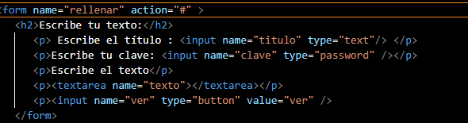

10- Con toda la investigación que generaron deben de generar un formulario que realice las
siguientes funciones.

La función valida() debe devolver true o false según la validación haya sido correcta o haya fallado. Este valor debe ser devuelto al navegador: el valor true significa "continúa y envía el formulario al servidor", mientras que false significa "cancelar y no enviar el formulario". Por ello, en el código se debe escribir onsubmit="return valida(this)" para reenviar el valor devuelto al navegador.

- ¿Qué obtenga los datos del input?.
- ¿Qué verifique los datos que se ingresan en el input?.
- ¿Qué el formulario presente una calculo de sumatoria para validar ¿Qué no sos un robot”?.